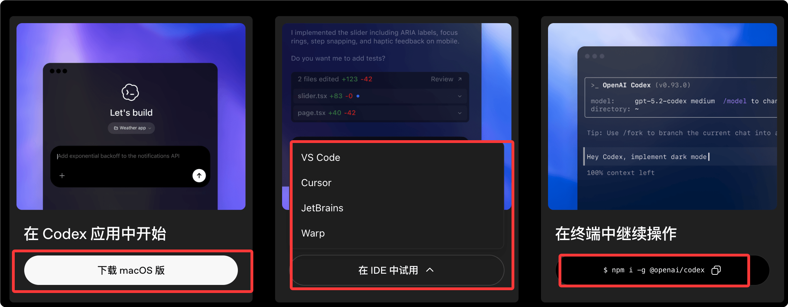
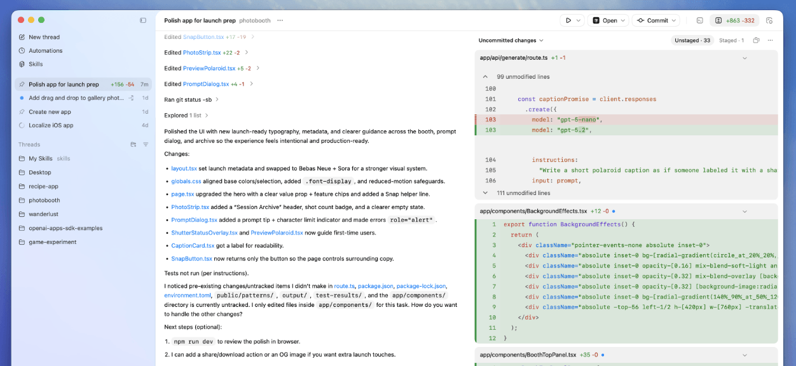
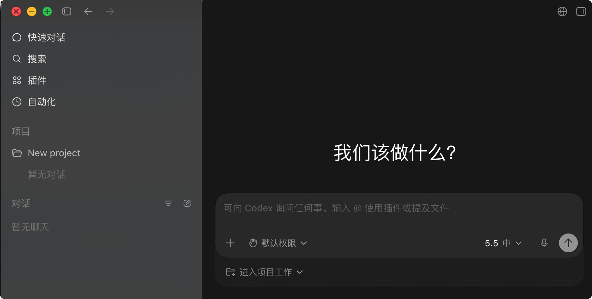
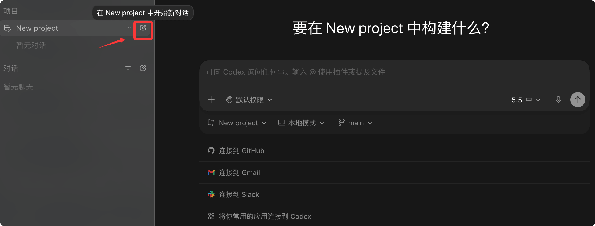
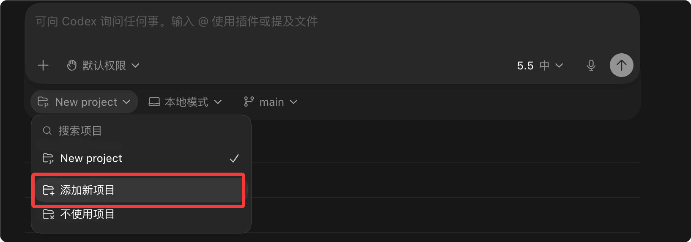
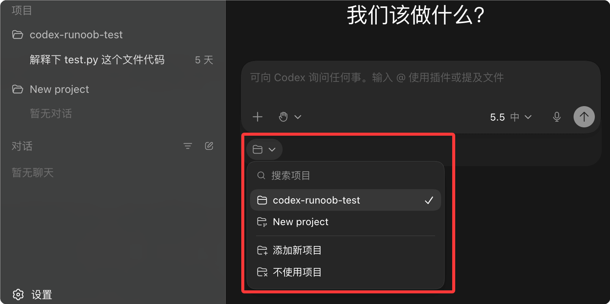
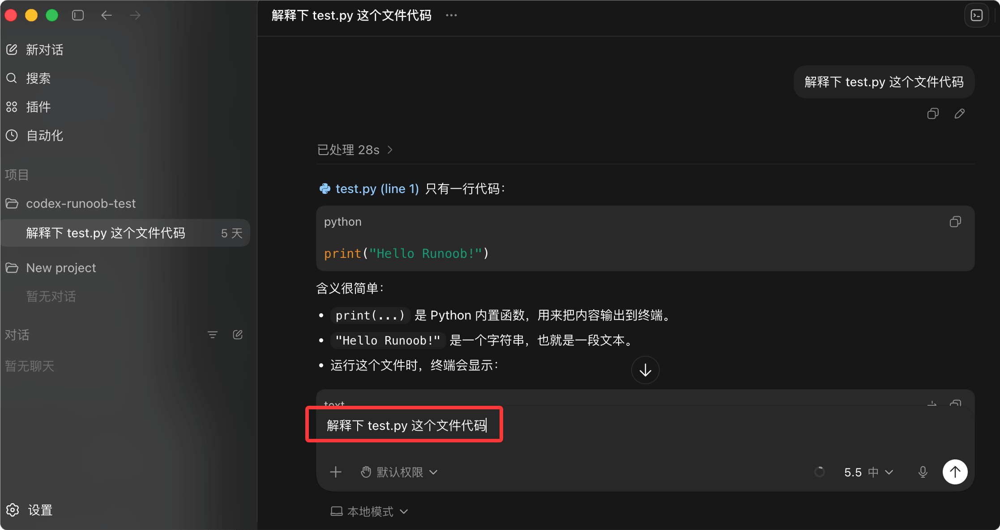
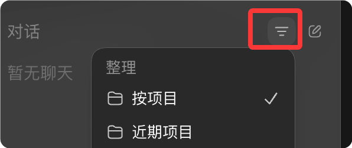
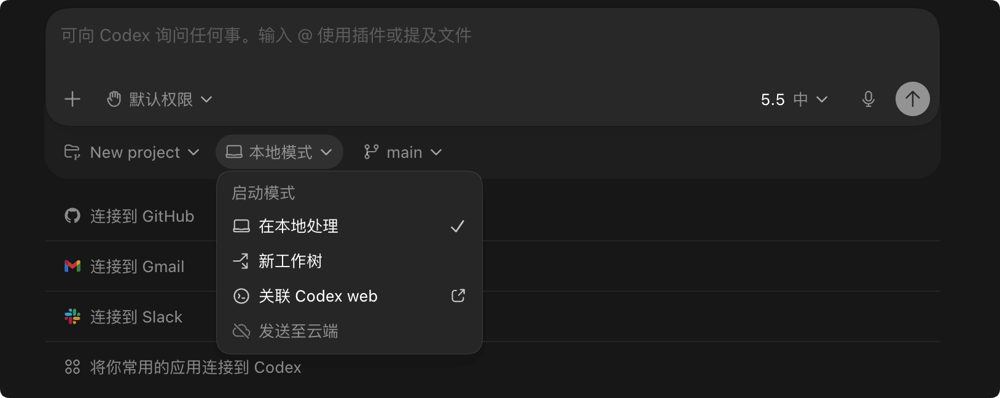
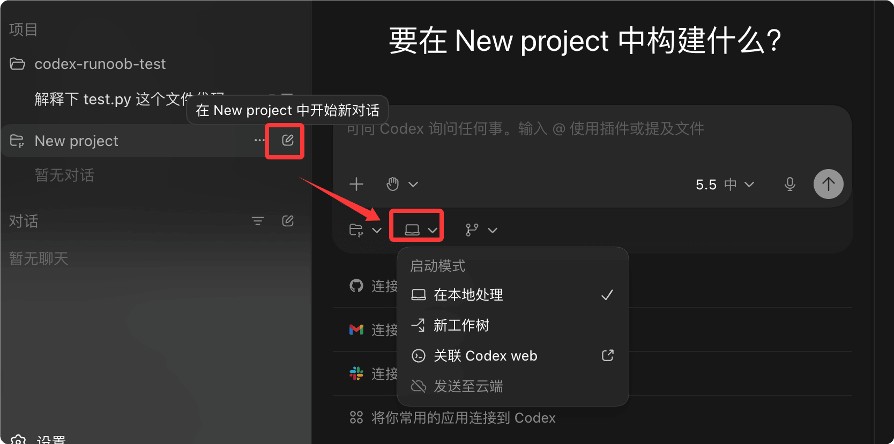

Codex 桌面应用
目前 Codex 主流有三种使用方式：
| 方式 | 适合人群 | 推荐程度 |
|---|---|---|
| Web 网页版 | 轻度体验 | ⭐⭐ |
| CLI 命令行版 | 重度开发者 | ⭐⭐⭐⭐ |
| Desktop 桌面应用 | 大多数人 | ⭐⭐⭐⭐⭐ |

Codex App 是官方推荐的桌面客户端，提供完整功能和流畅的多项目并行体验。

下载与安装
Codex App 支持 macOS（Apple Silicon）和 Windows。
下载地址：https://chatgpt.com/codex
| 平台 | 下载方式 |
|---|---|
| macOS | 官网下载或 Homebrew |
| Windows | 官网下载安装包 |
首次使用
安装完成后，按以下步骤开始：
1、打开 Codex App
2、使用 ChatGPT 账号或 OpenAI API Key 登录
如果使用 API Key 登录，部分云端功能可能不可用。
3、登录成功后界面如下：

我们刚使用可以先关注对话和项目就好了，对话就跟普通的 ChatGPT 的网页版一样进行聊天就可以了。
项目（ Project ）我们可以把它理解成：ChatGPT 的聊天 + IDE 的工程目录 + AI Agent 的长期记忆 的组合体。
项目（ Project ） 会绑定到你电脑上的一个文件夹，Codex 只会在这个目录内工作。

我这里选择 "添加新项目"，把 codex-runoob-test 添加：

进来，之后左右两侧都可以看到该项目的名称，多个项目可以在列表中选择：
4、发送第一条 Prompt 开始使用

界面结构
Codex App 主要包含以下区域：
| 区域 | 功能 |
|---|---|
| 项目侧边栏 | 管理多个项目，快速切换 |
| 项目列表 | 显示所有会话，支持筛选和归档 |
| 审查面板 | 查看 Codex 所做的文件更改 |
| 终端面板 | 每个项目独立的内置终端 |
| 技能选择器 | 浏览和启用自定义技能 |
| 区域 | 位置 | 功能说明 |
|---|---|---|
导航按钮 |
左上角返回/前进箭头 |
用于在历史会话或页面之间切换，类似浏览器的前进后退。 |
| 新对话 | 左侧菜单顶部 | 快速开启一个临时 AI 对话，不进入具体项目上下文，适合直接提问、代码解释、命令生成等轻量任务。 |
| 搜索 | 左侧菜单 | 搜索历史对话、项目内容、文件或任务记录。大型项目中非常重要，相当于 AI IDE 的全局搜索入口。 |
| 插件 | 左侧菜单 | 管理和调用插件能力，例如 GitHub、终端、数据库、文件系统、浏览器工具等扩展能力。 |
| 自动化 | 左侧菜单 | 创建自动执行任务，例如：定时生成日报、定期检查仓库、自动执行脚本、提醒任务等。 |
| 项目（Projects） | 左侧中部 | 项目工作区管理区域。每个项目通常绑定一个代码仓库、目录或工作空间。 |
| New project | 左侧项目区域 | 创建新项目。创建后通常会关联本地文件夹、Git 仓库或远程代码环境。 |
| 对话（Chats） | 左侧底部 | 全局聊天记录区域，用于管理非项目类会话。 |
| 过滤按钮 | 对话栏右侧漏斗图标  |
对聊天记录进行筛选，例如按项目、时间、类型过滤。 |
| 新建聊天按钮 | 对话栏右侧编辑图标 | 创建一个新的独立聊天项目。 |
| 主工作区 | 中央黑色区域 | Codex 的核心交互区域。包括 AI 对话、代码生成、Agent 执行、文件修改结果展示等。 |
| "我们该做什么？" | 主区域中央 | 欢迎界面提示语，引导用户开始任务。 |
| 输入框 | 底部中央大输入框 | 向 Codex 输入自然语言指令，例如：生成代码、修复 Bug、分析项目、重构架构等。 |
| @ 插件提示 | 输入框提示文字 | 支持通过 @ 调用插件或工具，例如 @terminal、@github、@browser 等。 |
| 文件提及功能 | 输入框提示文字 | 可以直接拖拽文件或引用项目文件，让 AI 分析具体代码。 |
| "+"按钮 | 输入框左下 | 添加附件、文件、图片或额外上下文。 |
| 默认权限 | 输入框底部左侧 | 控制 AI Agent 的执行权限，例如：只读、允许编辑文件、允许执行命令等。 |
| 模型选择器（5.5 中） | 输入框右下 | 当前使用的模型版本切换区域。通常可切换不同能力等级模型。 |
| 麦克风按钮 | 输入框右下 | 语音输入功能。 |
| 发送按钮 | 输入框最右侧圆形箭头 | 提交当前任务给 Codex。 |
| "进入项目工作" | 输入框下方 | 进入真正的项目 Agent 模式。AI 会基于整个代码仓库进行上下文理解，而不是普通聊天。 |
| 地球图标 | 右上角 | 网络或远程连接相关功能，可能用于在线模式、同步或远程环境。 |
| 右上角侧栏按钮 | 右上角矩形图标 | 控制右侧附加面板显示，例如日志、终端、文件树、Agent 状态等。 |
三种运行模式
每个项目可以选择三种运行模式：
| 模式 | 说明 | 适用场景 |
|---|---|---|
| Local | 在本地项目目录工作 | 日常开发、直接查看结果 |
| Worktree | 在独立 Git worktree 中工作 | 隔离变更、并行开发 |
| Cloud | 在云端隔离环境运行 | 远程委派、并行处理 |

模式选择
在创建新项目时，在输入框下方选择模式：
- Local：直接在当前目录工作，变更立即可见
- Worktree：创建独立分支，完成后可合并到 Local
- Cloud：任务在云端运行，结果通过 PR 或报告呈现

Worktree 模式使用 Git worktree 技术，允许同时在不同分支工作。
Review 模式
Review 模式让你查看和审批 Codex 所做的更改。
审查面板功能
| 功能 | 说明 |
|---|---|
| Diff 查看 | 显示所有文件变更的详细对比 |
| 内联评论 | 在特定代码行添加评论 |
| Chunk 操作 | 按代码块选择接受或拒绝 |
| 整体提交 | 创建 Git commit 或推送更改 |
切换审查视图
审查面板支持两种视图：
- 所有更改：显示项目的 Git 状态，包括非 Codex 的更改
- Last turn 更改：只显示最近一轮 Codex 的更改
审查操作
Cmd + Option + B # 切换审查面板
Cmd + Shift + P # 打开命令菜单
# 审查流程
1. 查看文件变更
2. 点击代码块接受/拒绝
3. 添加评论说明
4. 提交或推送
Automations（自动化）
Automations 让你安排 Codex 定期在后台运行任务。
使用前提
- Codex App 正在运行
- 选择的项目在磁盘上可用
创建自动化
- 打开侧边栏 Automations 面板
- 点击 "New Automation"
- 配置触发频率和任务描述
- 设置沙箱模式
自动化示例
| 任务 | 描述 |
|---|---|
| 技能自动创建 | 扫描会话文件，更新技能使其更有效 |
| 每日简报 | 分析最近提交，生成变更摘要 |
| Bug 监控 | 检查 telemetry 错误，尝试自动修复 |
自动化任务结果会添加到 Triage 收件箱，无结果时自动归档。
Worktrees 管理
Codex App 内置 Git worktree 支持。
Worktree 优势
- 并行处理多个任务而不互相干扰
- 保持主分支干净
- 后台运行任务时专注前台工作
Handoff 流程
Handoff 允许在 Local 和 Worktree 之间切换：
- 在 Worktree 中完成任务
- 创建 commit 和 PR
- 选择 Handoff 到 Local 继续测试
Worktree 只继承 Git 中的文件，.gitignore 中的文件不会随项目移动。
本地环境配置
通过 Local Environments 定义 worktree 的设置脚本和常用操作。
设置脚本
创建新 worktree 时自动运行的脚本：
设置脚本示例
npm install # 安装依赖
npm run build # 构建项目
Actions（操作）
定义常用任务，在顶部操作栏快速访问：
| Action | 说明 |
|---|---|
| 启动开发服务器 | 运行 npm run dev |
| 执行测试 | 运行测试套件 |
| 代码格式化 | 运行 prettier |
快捷键
| 快捷键 | 功能 |
|---|---|
Cmd + Shift + P | 命令菜单 |
Cmd + N | 新建项目 |
Cmd + Shift + [ / ] | 切换项目 |
Cmd + Option + B | 切换审查面板 |
Cmd + J | 切换终端 |
Ctrl + M | 语音输入 |
Cmd + O | 添加项目 |
常见问题
Q: App 与 CLI/IDE 如何同步？
当在同一项目中使用 App 和 IDE 扩展时，它们会自动同步 Auto Context 和活跃项目。
Q: 如何找到归档的项目？
在 Settings 中查看 Archived Threads，选择 Unarchive 恢复。
Q: Worktree 代码与本地不同？
Worktree 只继承 Git 中的文件。需要设置脚本安装依赖和构建。
Q: App 和 CLI 版本不同导致功能差异？
检查版本：CLI 用 `codex --version`，App 用菜单 About。

点我分享笔记